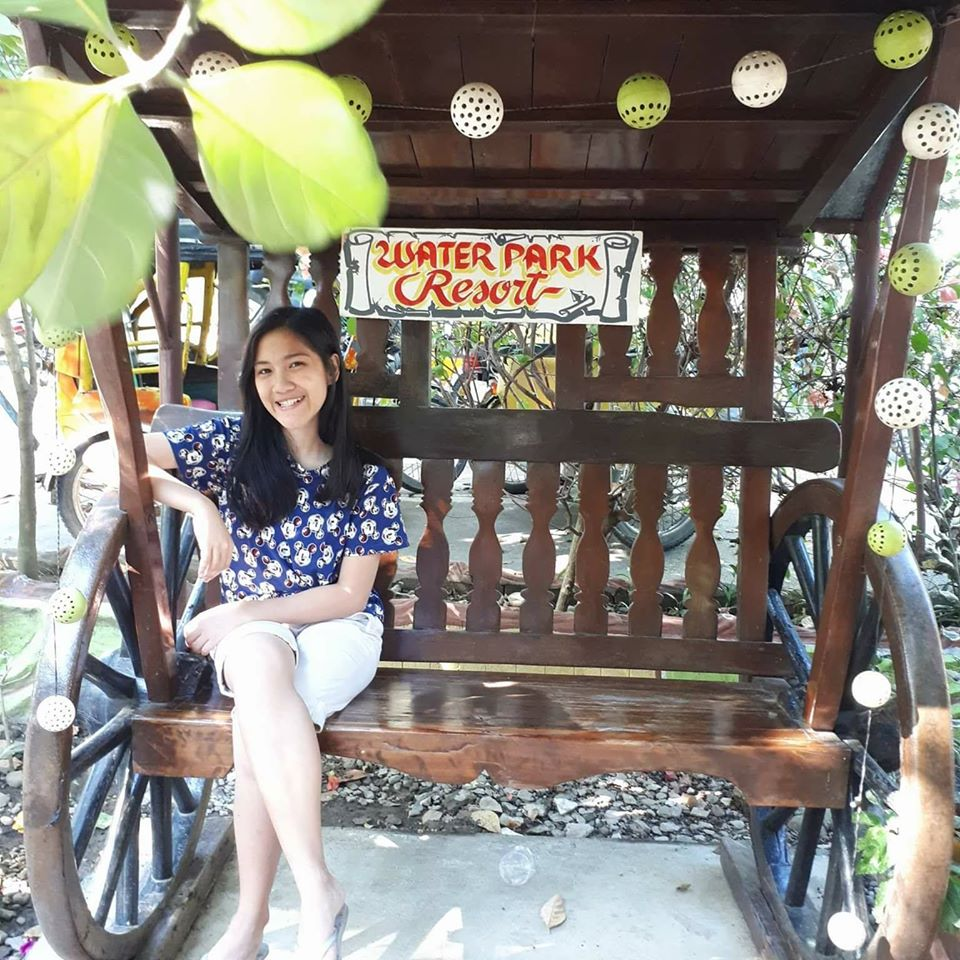

This is my Autobiography

Name: Ervie Marie G. De Leon
Age: 20 Years Old
Nickname: Erv, Vhie, Marie
Address: Domanpot Asingan, Pangasinan
Contact Number: 0926-404-1953
Name of Father: Ernesto N. De Leon (Deceased)
Name of Mother: Vicky G. De Leon (Deceased)
Year Level: 2nd Year College
School: Pangasinan State University Urdaneta Campus
Course: Bachelor of Science in Information Technology
Character: Kind, Loving, Teachable, Understandable
Hobbies: Watching, Reading, Playing Instruments
Talents: Dancing, Singing, Advicing
Favorite Food: Sisig and Beef Stake
Favorite Music: How Can I Repay You For This (Christian Song)
Favorite Book: Bible
Favorite Singer: Joanne Oliveros (JIL Singer)
Favorite Vlogger: Alex Gonzaga
Favorite Movie: The Impossible, Beauty and the Beast
Favorite Drama: KDrama
Favorite Bible Verse: Proverbs 3:5-6
"This Bible Verse states,'Trust in the Lord with all your heart
and lean not on your own understanding; in all your ways submit
to him, and he will make your paths straight.' This is my life verse
for it always reminds me, to always trust in the Lord and not to lean on
my own understanding for the Lord knows what's the best for me so I always
trust in Him."
Favorite Motto: "Use your smile to change a world. Don't let the world
change your smile."
"That is my favorite motto for I believe that once we spread happiness
in the world it can brought a big and positive impact to all of us"
Go Back to My Profile